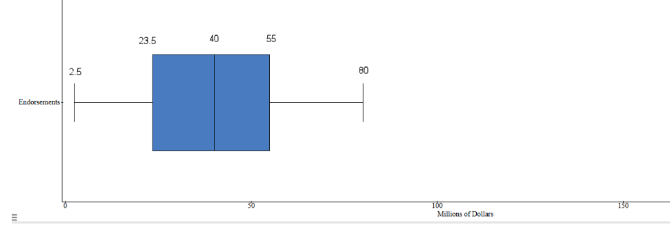

Statistics Unit
2.8 Measures of Variation
- Range: the difference between the minimum and maximum values in the data
- Quartiles: divide your data into quarters: the lowest 25%, the next lowest 25%, the second highest 25% and the highest 25%
- Standard Deviation: a measure which shows how much variation (such as spread, dispersion, spread,) from the mean exists
- Suppose that Samira records the ages of customers at the Snack Bar on a college campus from 12-2pm tomorrow, while Mary records the ages of customers at the McDonald’s near the highway at the same time. Who will have the larger SD of their ages – Samira or Mary? Explain why.
Mary is likely to encounter people of all ages at McDonald’s – from toddlers to senior citizens and every age in between. Samira might run into some toddlers and senior citizens at the on-campus snack bar, but she’ll mostly find a lot of people in the 18-25-year-old age group. Because the ages of McDonald’s customers will vary more than ages of Snack Bar customers, Mary will have a larger standard deviation of ages than Samira will.
- Suppose that Carlos and Hector visit their local humane society animal shelter. Carlos records the weights of the 25 cats that they find there, and Hector records the weights of the 25 human beings that they encounter. Who will have the larger standard deviation of their weights –Carlos or Hector?
The weights of human beings vary much more than the weights of ordinary domestic cats, so Hector will have a larger standard deviation than Carlos.
The World's Highest-Paid Athletes 2022
| Rank | Name | Total Pay | On-the-Field Earnings | Off-the-Field Earnings | Sport |
|---|---|---|---|---|---|
| #1 | Lionel Messi | $130 M | $75 M | $55 M | Soccer |
| #2 | LeBron James | $121.2 M | $41.2 M | $80 M | Basketball |
| #3 | Cristiano Ronaldo | $115 M | $60 M | $55 M | Soccer |
| #4 | Neymar | $95 M | $70 M | $25 M | Soccer |
| #5 | Stephen Curry | $92.8 M | $45.8 M | $47 M | Basketball |
| #6 | Kevin Durant | $92.1 M | $42.1 M | $50 M | Basketball |
| #7 | Roger Federer | $90.7 M | $0.7 M | $90 M | Tennis |
| #8 | Canelo Alvarez | $90 M | $85 M | $5 M | Boxing |
| #9 | Tom Brady | $83.9 M | $31.9 M | $52 M | Football |
| #10 | Giannis Antetokounmpo | $80.9 M | $39.9 M | $41 M | Basketball |
| #11 | Russell Westbrook | $79.2 M | $44.2 M | $35 M | Basketball |
| #12 | James Harden | $74.4 M | $44.4 M | $30 M | Basketball |
| #13 | Matthew Stafford | $72.3 M | $69.8 M | $2.5 M | Football |
| #14 | Aaron Rodgers | $68 M | $57 M | $11 M | Football |
| #15 | Tiger Woods | $68 M | $0.04 M | $68 M | Golf |
Source Highest Paid Athletes List From Forbes
TOTAL PAY
Mean:
$90.23 M
Median:
$90 M
Mode:
68
Range:
$62 M
Quartiles
Low (Min):
$68 M
Lower Quartile:
$74.4 M
Median:
$90 M
Upper Quartile:
$95
High (Max):
$130 M
BOXPLOT
Standard Deviation:
$18.89 M
OFF-THE-FIELD EARNINGS
Mean:
$43.1 M
Median:
$47 M
Mode:
$55 M
Range:
$87.5 M
Quartiles
Low (Min):
$2.5 M
Lower Quartile:
$25 M
Median:
$47 M
Upper Quartile:
$55 M
High (Max):
$90 M
BOXPLOT

Standard Deviation and Range Rule of Thumb for Standard Deviation:
$25.78 M and $21.88 M